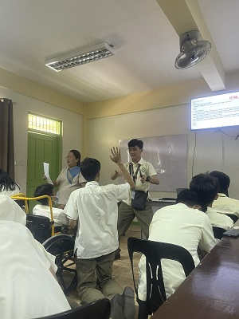

Hello po!
This is my portfolio in ICT for SY 2023-2024
(Hope you like it :D)
*play when reading and stop on videos*
I SANG ON TEACHER'S DAY!!!
It was quite nerve-racking for me
(Noodle Legs XD)
(Noodle Legs XD)
Nice Pic Bro
(I'm gonna say some things about the pictures I have)
(Disclaimer: This all happened in/is related to school)

I found this fella in school when he hopped into our class room,
I released him back after we had fun with him.
(he wasn't harmed)
I released him back after we had fun with him.
(he wasn't harmed)
So I found and caught this fella at the start of the School Year,
yes it's big and dangerous but this kind of spider would rather flee
than fight.
(I brought it to my house and can't find them ._.)
yes it's big and dangerous but this kind of spider would rather flee
than fight.
(I brought it to my house and can't find them ._.)
I drew this in my free time after class,
I felt pretty proud because it looks just like the original drawing.
(the other Wooper though, not so much)
I felt pretty proud because it looks just like the original drawing.
(the other Wooper though, not so much)

Of course we can't forget about the subject that told us to make this.
The situation really brings out the fun in our subject
(Really putting the HYPER in HyperText Markup Language)
The situation really brings out the fun in our subject
(Really putting the HYPER in HyperText Markup Language)
I felt I did a REALLY good job on this,
it looks more cavepainting accurate compared to the normal stencil
drawing method.
(I legit have no comment here it's just good)
it looks more cavepainting accurate compared to the normal stencil
drawing method.
(I legit have no comment here it's just good)
I was trying to go for a somewhat "Lord of the Rings" kind of look,
since there is a theatre play very similar to its plot but I've never watched
neither of them
(4/10 smeagol impression)
since there is a theatre play very similar to its plot but I've never watched
neither of them
(4/10 smeagol impression)
RANKING USING TABLES
To end this I'm gonna rank the
ICT QUARTERS
based on their Importance
TIER LIST
| S | 2ndQTR | |||||
| A | 3rdQTR | 4thQTR | ||||
| B | ||||||
| C | 1stQTR | |||||
| D | ||||||
| F |
OH, almost forgot
Watch this video I made for ICT in the 3rd Quarter
THANK YOU SO MUCH
FOR READING